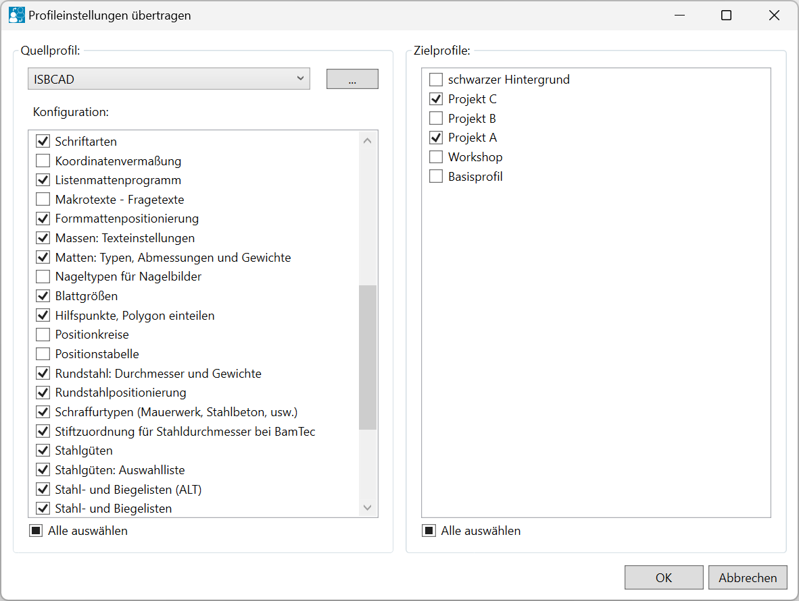
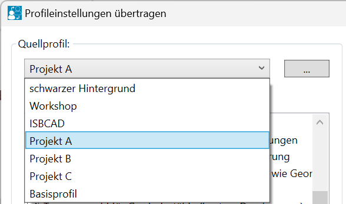
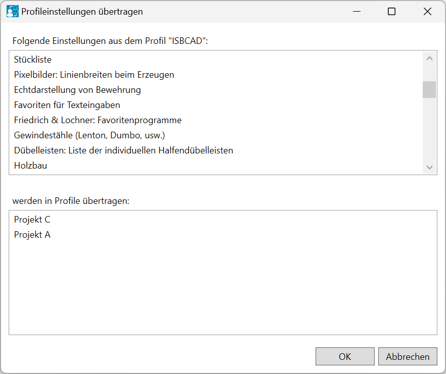
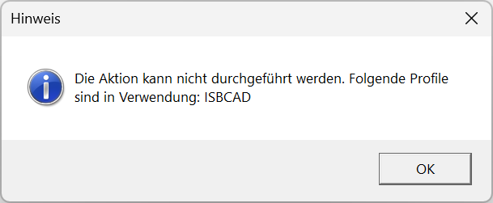

Windows-Startmenü → Programmgruppe ISBCAD 2026 → Hauptmenü → Profilmanager → Übertragen.
Verwenden Sie den Dialog Profileinstellungen übertragen, um Konfigurationsdateien (Einstellungen) aus einem Quellprofil in ein anderes oder in mehrere Zielprofile zu übertragen.
|
Hinweis: |
|
Die gewählten Konfigurationsdateien im Quellprofil überschreiben die entsprechenden Einstellungen des Zielprofils. |

Optionen im Dialog "Profileinstellungen übertragen"
 |
Quellprofil:
Auswahl des Quellprofils, dessen Einstellungen Sie übertragen möchten.
Klicken Sie die Dropdown-Liste  an, um diese aufzuklappen, und wählen Sie das Quellprofil aus.
an, um diese aufzuklappen, und wählen Sie das Quellprofil aus.
 |

Öffnet die Verzeichnisauswahl zum Einlesen einer ISBCAD-Profildatei (*.isbcadprofil).
Wählen Sie im Dialog die entsprechende Profildatei aus und klicken Sie auf Öffnen. Die Konfigurationen des Profils werden geladen und im Dialogbereich Konfiguration: angezeigt.
Konfiguration: Zeigt die Konfigurationen an, die im gewählten Quellprofil vorhanden sind. Setzen Sie bei den Konfigurationen einen Haken
Um alle Konfigurationen bzw. Zielprofile aus- oder abzuwählen, klicken Sie in die Alle auswählen-Checkbox. |

Zielprofile:
Listet die auf dem System verfügbaren Profile auf.
Wählen Sie die Zielprofile für die gewählten Konfigurationen aus, indem Sie einen Haken  setzen.
setzen.

Öffnet eine Übersicht der zu übertragenden Konfigurationen.
·Folgende Einstellungen aus dem Profil "X": Zeigt die im Quellprofil gewählten Konfigurationen an.
·werden in Profile übertragen: Zeigt die Zielprofile an.
 |
Um die Konfigurationen in die Zielprofile zu übertragen, klicken Sie auf OK. Abbrechen bricht die Aktion ab.
Nach dem Kopiervorgang erhalten Sie eine Meldung mit den ausgeführten Aktionen. Bestätigen Sie mit OK. Sie können weitere Konfigurationen übertragen oder den Dialog über Abbrechen schließen.
Profileinstellungen können nicht übertragen werden
Wenn das Übertragen von Profileinstellungen nicht möglich ist, erhalten Sie eine Meldung.
Diese Meldung tritt in folgenden Fällen auf:
·das Quell- oder Zielprofil wird in einer ISBCAD-Instanz verwendet.
·eine weitere Instanz des Hauptmenüs ist geöffnet oder wird im Hintergrund ausgeführt, in dem das Quell- oder Zielprofil als aktives Profil eingestellt ist.
 |
Bestätigen Sie die Meldung mit OK. Um die Profileinstellungen zu übertragen, schließen Sie die entsprechenden Instanzen, und führen Sie die Aktion erneut aus.
Siehe auch: